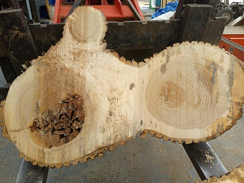
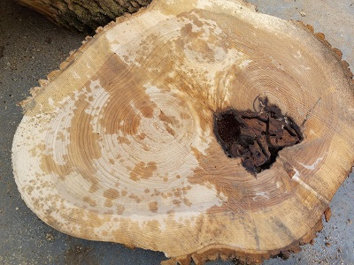
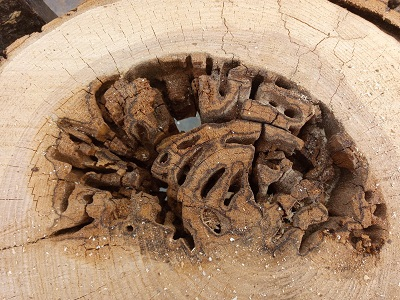
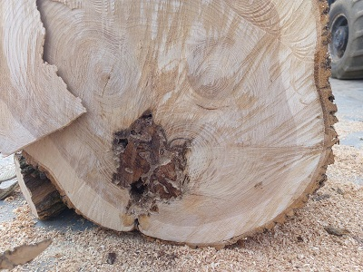
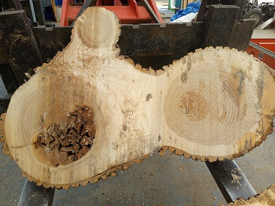
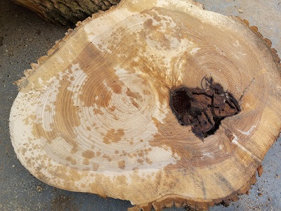
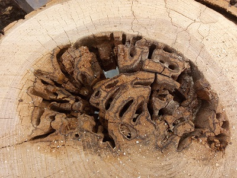
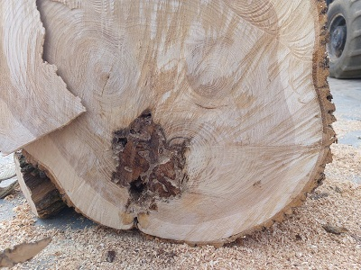

What We Do
Nielsen Forestry Products is a family owned forestry business specializing in custom cut wood slabs and lumber, custom size wood construction stakes, and custom size firewood and campfire bundles. Wood is sourced locally from local landscapers and tree services to avoid extra cost of trees grown specifically for lumber or firewood.
 






